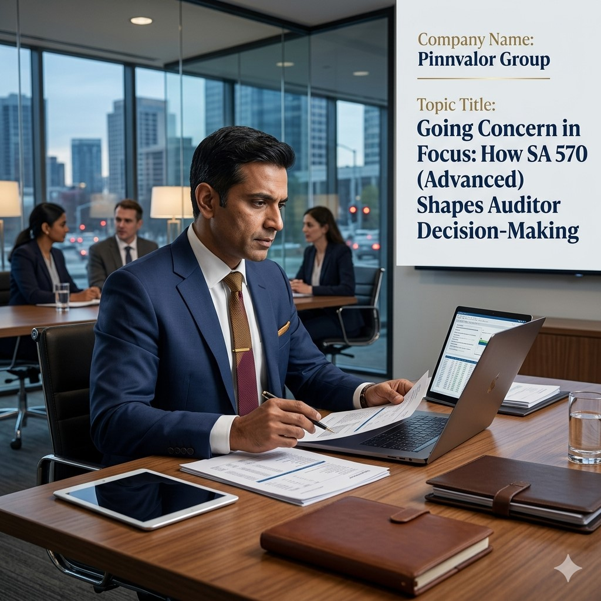

Going Concern in Focus: How SA 570 (Advanced) Shapes Auditor Decision-Making
In financial reporting, few concepts carry as much weight—and professional judgment—as the going concern assumption. Under normal circumstances, financial statements are prepared on the basis that an entity will continue its operations for the foreseeable future. But when doubts arise about survival, auditors must step into one of their most sensitive and high-stakes responsibilities.
Can one audit decision change how the market perceives a company’s future?
A company may look stable today, but tomorrow depends on its going concern assessment. SA 570 ensures that risks hidden in assumptions are brought into clear focus.
SA 570 (Revised / Advanced) governs how auditors evaluate whether a company can continue as a going concern and how they respond when uncertainty exists. It is not merely a compliance requirement—it is a critical framework that directly influences audit opinion, investor confidence, and market perception.
Understanding the Core of SA 570 (Advanced)
SA 570 focuses on the auditor’s responsibility relating to management’s use of the going concern basis of accounting. The standard requires auditors to assess whether there are material uncertainties that may cast significant doubt on an entity’s ability to continue operating for at least 12 months from the reporting date.
At its core, SA 570 demands:
- Professional skepticism in evaluating financial stability
- Deep analysis of financial and non-financial indicators
- Forward-looking assessment, not just historical performance review
- Clear communication of uncertainties in audit reporting
Key Indicators That Trigger Going Concern Evaluation
Auditors must remain alert to early warning signs that may indicate going concern risk. These indicators can arise from both internal and external factors.
Financial Indicators
- Recurring operating losses or negative cash flows
- Inability to meet debt obligations
- Negative net worth or declining liquidity ratios
- Loan covenant breaches
Operational Indicators
- Loss of key management or critical personnel
- Dependence on a limited number of customers or suppliers
- Operational shutdowns or scaling constraints
External Indicators
- Adverse legal or regulatory developments
- Market downturns or industry disruption
- Credit rating downgrades or restricted financing access
Auditor’s Responsibility Under SA 570
SA 570 places a structured responsibility on auditors to evaluate management’s assessment of going concern and independently challenge its assumptions.
The auditor is required to:
- Review management’s going concern assessment process
- Evaluate the assumptions used in cash flow forecasts
- Consider mitigating factors such as restructuring plans or refinancing options
- Assess the reliability of future projections
Importantly, auditors are not responsible for predicting failure—but for assessing whether material uncertainty exists and whether it is appropriately disclosed.

Advanced Judgment in Real-World Scenarios
The “advanced” aspect of SA 570 lies in the level of professional judgment required. Auditors often operate in environments where evidence is incomplete, forecasts are uncertain, and management optimism may bias assumptions.
In such situations, auditors must balance:
- Hard data (financial statements, debt schedules, cash flows)
- Soft signals (management intent, market sentiment, restructuring plans)
- Reasonable worst-case scenarios
This is where auditor skepticism becomes essential. Over-reliance on management projections without independent corroboration can lead to audit failure and reputational risk.
Impact on Audit Opinion
One of the most critical outcomes of SA 570 evaluation is its direct impact on the audit opinion.
Depending on findings, the auditor may conclude:
- Unmodified Opinion – if no material uncertainty exists
- Unmodified Opinion with Emphasis of Matter – if uncertainty exists but is adequately disclosed
- Qualified / Adverse Opinion – if financial reporting is not appropriate
- Disclaimer of Opinion – in extreme cases of insufficient evidence
This makes SA 570 one of the most influential standards in shaping stakeholder perception of financial health.
Disclosure Requirements and Transparency
Even when an entity is struggling, transparent disclosure can significantly reduce audit modification severity. SA 570 emphasizes clear communication in financial statements regarding:
- Nature of uncertainties
- Management’s plans to address risks
- Timeframe of assessment
- Key assumptions used in projections
Transparent disclosure strengthens investor trust, even in difficult financial conditions.
Why SA 570 Matters for Stakeholders
Going concern assessments are not just an audit formality—they directly influence capital markets.
For investors, lenders, and regulators, SA 570 acts as an early warning system that highlights financial distress before it escalates into failure.
For auditors, it represents a high-responsibility area where judgment, ethics, and technical expertise converge.
Conclusion
SA 570 (Advanced) transforms going concern evaluation from a routine audit check into a deeply analytical and judgment-driven process. It requires auditors to look beyond numbers and assess the real economic viability of an entity.
In an era of financial volatility and rapid business disruption, the importance of robust going concern assessment has never been greater. Ultimately, SA 570 ensures that financial statements reflect not just performance—but sustainability.
In audit, survival is not assumed—it is tested. SA 570 ensures that test is both rigorous and transparent.